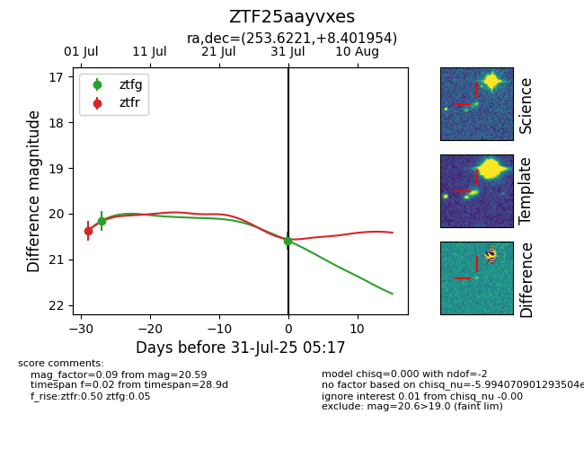

Target ZTF25aayvxes at 2025-07-31 05:17, see:
FINK: fink-portal.org/ZTF25aayvxes
Lasair: lasair-ztf.lsst.ac.uk/objects/ZTF25aayvxes
ALeRCE: alerce.online/object/ZTF25aayvxes
alt names
ZTF25aayvxes (ztf,fink)
coordinates:
equatorial (ra, dec) = (253.6221,+8.40195)
galactic (l, b) = (26.9613,+29.77908)
photometry
last ztfg=20.59, ztfr=20.37
2 ztfg, 1 ztfr detections
